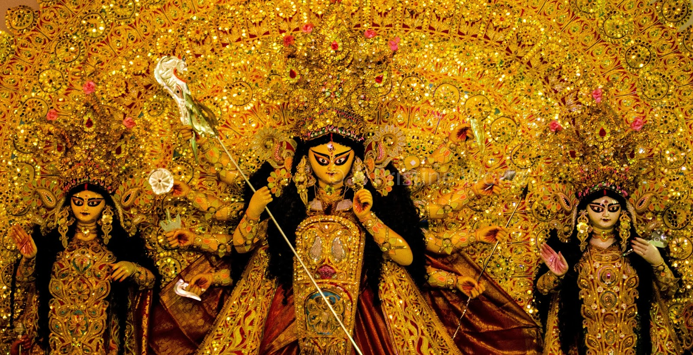
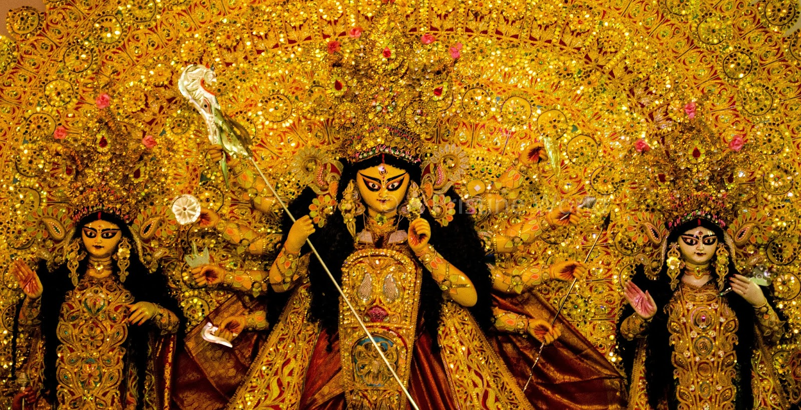

Durga Puja is one of the important Hindu festivals in India. The festival celebrates life, culture, traditions and customs. The festival is celebrated all over India and has different rituals and festivities especially in the eastern Indian states of West Bengal, Assam, Bihar, Jharkhand, Odisha and Tripura. It is also celebrated in Delhi, Uttar Pradesh, Maharashtra, Gujarat, Punjab, Kashmir, Karnataka and Kerala. The festival is commemorated by worshipping Goddess Durga. She is worshipped for killing Mahisasur, a powerful demon who was also known as the Buffalo Demon. It also marks her return every year in the Bengali month of Aswin, remembering Lord Ram as he summoned Goddess Durga for her blessings in order to save Sita from the clutches of Ravana.
Durga Puja is one of the biggest festivals in Bengal and it is the most important socio-cultural event in the Bengali society.
The legend behind the Durga Puja festival is that Mahishasur, the Buffalo Demon, received blessings from Lord Brahma, through years of praying, which made him invincible. Once gaining this power he started destroying the world, killing people and tried to kill the Gods too. In dismay, the Gods combined their powers to create a maiden, and each placed each of their most powerful weapons in one of her ten hands. Riding a lion she killed the demon.
Durga Puja celebrations are also called as Akalbodhon. It is called so because Lord Ram wanted the blessings of Goddess Durga to save his wife Sita from Ravana's clutches. Pleased with Ram's devotion, Goddess Durga appeared before Ram and gave her blessings. Since Ram summoned the Goddess during autumn it is thus known as 'Akalbodhon'. Other legends say that Lord Shiva allowed Goddess Durga to visit her mother only for nine days in a year. Therefore this festival marks her visit to her mother's place.
Durga Puja has transcended and reached every corner in India. As one of the biggest festivals in Bengal, Durga Puja is celebrated on a mass scale with Puja Pandals erected in almost every corner of West Bengal. Community Pujas are also organized in each locality. On the last day, the idols are taken in decorative processions to be immersed in the river or the pond. Big community Pujas are sponsored by multinational companies and commercial firms. The main Puja last for three days and expert priest are called in to do these Pujas.
Durga Puja has generally materialized into a community festival. Kolkata takes on a completely different look during the festival, especially at night. Thousands of people line up at the pandals. Streets are decorated with different kinds of light shows. Restaurants are generally full and several temporary food stalls are opened in the city. Offices, schools and colleges remain closed during the festival.
On Dashami, which is the last day, the idols are carried in a procession and finally immersed in a close by river or lake. Bengalis all over India and the world celebrate this great festival as it is a part of their culture. Apart from traditional rituals, many cultural activities like song and dance competitions, games and fetes are organized during the festival. Professional singers are invited to sing and praise Goddess Durga.